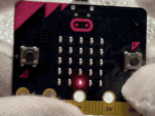
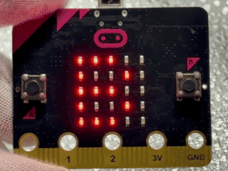
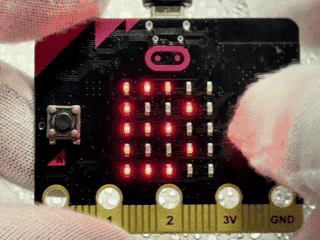
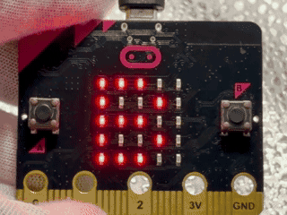
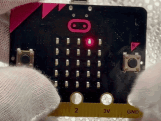

↔️左右にゆらして動かしてみよう ↔️左右に揺らして動かしてみよう
このプログラムでは、micro:bitの「かそくどセンサー」を使って、左右にゆらすことでキャラクターをそうさします。 このプログラムでは、micro:bitの「加速度センサー」を使って、左右に揺らすことでキャラクターを操作します。
使い方
- micro:bitを左にかたむけると、キャラクターが左へいどうする micro:bitを左に傾けると、キャラクターが左へ移動する
- micro:bitを右にかたむけると、キャラクターが右へいどうする micro:bitを右に傾けると、キャラクターが右へ移動する

ねらい
- かそくどセンサーのデータで、左右の動きを読み取るたいけん 加速度センサーのデータで、左右の動きを読み取る体験
- LED画面で、動きがかわる様子を見るたいけん LED画面で、動きが変わる様子を見る体験
- しきいちをかえて、動きやすさをくらべる学習 しきい値を変えて、動きやすさを比べる学習
チャレンジ
- 前後のかたむきでも、上下に動くようにする 前後の傾きでも、上下に動くようにする
- かたむきが大きいほど、動く速さがかわる仕組み作り 傾きが大きいほど、動く速さが変わる仕組み作り
- 止まるマスを作り、当たると止まるルールついか 止まるマスを作り、当たると止まるルール追加
👹豆まきでおにたいじ 👹豆まきで鬼退治
このプログラムでは、micro:bitの「かそくどセンサー」を使って、せつぶんのおにたいじをイメージしたゲームを行うことができます。 このプログラムでは、micro:bitの「加速度センサー」を使って、節分の鬼退治をイメージしたゲームを行うことができます。
使い方
- さいしょに「B」という文字がスクロールでひょうじされる 最初に「B」という文字がスクロールで表示される
- Bボタンをおすと、ゲームがスタートする Bボタンを押すと、ゲームがスタートする
- スタートすると、3、2、1の数字がじゅんばんにひょうじされる スタートすると、3、2、1の数字が順番に表示される
- カウントダウンのあと、おにの顔がひょうじされて、3秒間の豆まきタイムが始まる カウントダウンのあと、鬼の顔が表示されて、3秒間の豆まきタイムが始まる
- 豆をまくようにmicro:bitを右手で持ち、軽くふると、おにの顔がいっしゅんやられた顔になり、そのあとふつうの顔にもどる 豆をまくようにmicro:bitを右手で持ち、軽く振ると、鬼の顔が一瞬やられた顔になり、そのあと普通の顔に戻る
- 3秒の間は数字はひょうじされず、おにの顔だけがかわる 3秒の間は数字は表示されず、鬼の顔だけが変わる
- 3秒たつと、ふった回数が数字でひょうじされ、そのあと回数に合わせたおにのひょうじょうがひょうじされる 3秒経つと、振った回数が数字で表示され、そのあと回数に合わせた鬼の表情が表示される
- 5回いじょうのときはやられたおにの顔、3回いじょう5回みまんのときはしょんぼりおにの顔、3回みまんのときはまだ強いおにの顔がひょうじされる 5回以上のときはやられた鬼の顔、3回以上5回未満のときはしょんぼり鬼の顔、3回未満のときはまだ強い鬼の顔が表示される
- 3秒たつと、画面にもう一度「B」がひょうじされ、またBボタンで何回でもくり返し遊べる 3秒経つと、画面にもう一度「B」が表示され、またBボタンで何回でも繰り返し遊べる

ねらい
- かそくどセンサーで体の動きの大きさがカウントされるたいけん 加速度センサーで体の動きの大きさがカウントされる体験
- せつぶんの行事とICTをむすびつけて考える学習 節分の行事とICTを結びつけて考える学習
- 回数や時間をいしきしながら体を動かす活動 回数や時間を意識しながら体を動かす活動
チャレンジ
- カウントされる動きの大きさをかえて、軽いふりでもカウントされるように調整 カウントされる動きの大きさを変えて、軽い振りでもカウントされるように調整
- 友だちどうしで回数とおにのひょうじょうをくらべてランキング作り 友だち同士で回数と鬼の表情を比べてランキング作り
- 豆の回数に合わせて音やメッセージのひょうじをついかするアレンジ 豆の回数に合わせて音やメッセージの表示を追加するアレンジ
❄️雪かべめいろゲーム ❄️雪壁迷路ゲーム
このプログラムでは、micro:bitの「かそくどセンサー」を使って、雪のかべのめいろをかたむきで進み、5秒いないにゴールを目指すゲームを行うことができます。 このプログラムでは、micro:bitの「加速度センサー」を使って、雪の壁の迷路を傾きで進み、5秒以内にゴールを目指すゲームを行うことができます。
使い方
- 起動すると、画面に「B」がひょうじされる 起動すると、画面に「B」が表示される
- Bボタンをおすと、ゲームがスタートする Bボタンを押すと、ゲームがスタートする
- かたむきで左右と上下へ動かして、自分のいちがいどうする 傾きで左右と上下へ動かして、自分の位置が移動する
- 雪のかべに当たると、進めずに止まる仕組み 雪の壁に当たると、進めずに止まる仕組み
- どうしてもゴールできない時は、Aボタンで雪のかべが作り直される どうしてもゴールできない時は、Aボタンで雪の壁が作り直される
- 5秒いないにゴールへ入ると、えがおがひょうじされる 5秒以内にゴールへ入ると、笑顔が表示される
- 5秒いないにゴールできないと、悲しい顔がひょうじされる 5秒以内にゴールできないと、悲しい顔が表示される

ねらい
- かそくどセンサーで左右上下を動かすたいけん 加速度センサーで左右上下を動かす体験
- 5秒の時間いしきと道さがしの考え方 5秒の時間意識と道探しの考え方
- 毎回かわる雪のかべにちょうせんする気持ち 毎回変わる雪の壁に挑戦する気持ち
チャレンジ
- 雪のかべの数をかえて、むずかしさ調整 雪の壁の数を変えて、難しさ調整
- Aボタンでかべをかえて、ゴールまでの道の見つけ方をくらべる Aボタンで壁を替えて、ゴールまでの道の見つけ方を比べる
- さいたんでゴールするさくせん作り 最短でゴールする作戦作り
🫘おに豆シューティングゲーム 🫘鬼豆シューティングゲーム
このプログラムは、micro:bitを使って、上の行を左右に動くおにをねらい、豆を投げて8秒いないのとくてんを楽しむゲームです。 このプログラムは、micro:bitを使って、上の行を左右に動く鬼を狙い、豆を投げて8秒以内の得点を楽しむゲームです。
使い方
- 起動すると、画面に「B」がひょうじされる 起動すると、画面に「B」が表示される
- Bボタンをおすと、ゲームがスタートする Bボタンを押すと、ゲームがスタートする
- Aボタンをおすと、自分が左へいどうする Aボタンを押すと、自分が左へ移動する
- Bボタンをおすと、自分が右へいどうする Bボタンを押すと、自分が右へ移動する
- A+Bをおすと、豆が投げられる A+Bを押すと、豆が投げられる
- 豆がおにに当たるたびに、点が1ふえる 豆が鬼に当たるたびに、点が1増える
- 8秒たつと、とくてんとおにの顔がひょうじされる 8秒経つと、得点と鬼の顔が表示される
- 1点いかのときは、おこった顔がひょうじされる 1点以下のときは、怒った顔が表示される
- 2点のときは、ねている顔がひょうじされる 2点のときは、寝ている顔が表示される
- 3点いじょうのときは、やられ顔が表示される 3点以上のときは、やられ顔が表示される

ねらい
- 左右そうさとねらいのたいけん 左右操作と狙いの体験
- 時間と点の見方 時間と点の見方
- くり返しの中のさくせん作り 繰り返しの中の作戦作り
チャレンジ
- おにの動く速さ調整 鬼の動く速さ調整
- 豆の速さ調整 豆の速さ調整
☃️ふって雪消しゲーム ☃️振って雪消しゲーム
このプログラムでは、micro:bitの「かそくどセンサー」を使って、上からふってくる雪が下でつもる前に、ふって雪を消すゲームを行うことができます。 このプログラムでは、micro:bitの「加速度センサー」を使って、上から降ってくる雪が下で積もる前に、振って雪を消すゲームを行うことができます。
使い方
- 起動すると、画面に「B」がひょうじされる 起動すると、画面に「B」が表示される
- Bボタンをおすと、雪がふり始める Bボタンを押すと、雪が降り始める
- 上からランダムに1このLEDの雪がひょうじされる 上からランダムに1個のLEDの雪が表示される
- そのままにすると、雪が下でつもっていく そのままにすると、雪が下で積もっていく
- A+Bを1回おすと、ふってくる雪が2こにふえる。くり返しおすと、1こずつふえる A+Bを1回押すと、降ってくる雪が2個に増える。繰り返し押すと、1個ずつ増える
- micro:bitをふると、つもった雪が消えて、ふってくる雪の数が1こにもどる micro:bitを振ると、積もった雪が消えて、降ってくる雪の数が1個に戻る

ねらい
- かそくどセンサーでふる動きをけんちするたいけん 加速度センサーで振る動きを検知する体験
- 動きと画面のつながりたいけん 動きと画面のつながり体験
- 雪の数を自分でかえるくふう 雪の数を自分で変える工夫
チャレンジ
- 雪の落ちる速さのへんこう 雪の落ちる速さの変更
- 雪をふやす数のルール作り 雪を増やす数のルール作り
- つもった雪がさいじょうだんまで行った時のルール作り 積もった雪が最上段まで行った時のルール作り
本情報の内容 (添付文書、リンク先などを含む) は、作成日時点でのものであり、予告なく変更される場合があります。